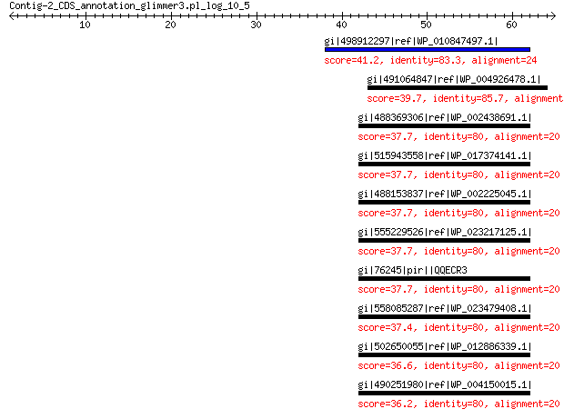

bitscore colors: <40, 40-50 , 50-80, 80-200, >200
 BLASTP 2.2.31+
Reference: Stephen F. Altschul, Thomas L. Madden, Alejandro A.
Schaffer, Jinghui Zhang, Zheng Zhang, Webb Miller, and David J.
Lipman (1997), "Gapped BLAST and PSI-BLAST: a new generation of
protein database search programs", Nucleic Acids Res. 25:3389-3402.
Reference for composition-based statistics: Alejandro A. Schaffer,
L. Aravind, Thomas L. Madden, Sergei Shavirin, John L. Spouge, Yuri
I. Wolf, Eugene V. Koonin, and Stephen F. Altschul (2001),
"Improving the accuracy of PSI-BLAST protein database searches with
composition-based statistics and other refinements", Nucleic Acids
Res. 29:2994-3005.
Database: All non-redundant GenBank CDS translations+PDB+SwissProt+PIR+PRF
excluding environmental samples from WGS projects
49,011,213 sequences; 17,563,301,199 total letters
Query= Contig-2_CDS_annotation_glimmer3.pl_log_10_5
Length=64
Score E
Sequences producing significant alignments: (Bits) Value
gi|498912297|ref|WP_010847497.1| conserved hypothetical protein 41.2 0.002
gi|491064847|ref|WP_004926478.1| hypothetical protein 39.7 0.010
gi|488369306|ref|WP_002438691.1| hypothetical protein 37.7 0.043
gi|515943558|ref|WP_017374141.1| hypothetical protein 37.7 0.046
gi|488153837|ref|WP_002225045.1| hypothetical protein 37.7 0.049
gi|555229526|ref|WP_023217125.1| hypothetical protein 37.7 0.049
gi|76245|pir||QQECR3 hypothetical protein E-116 - Escherichia coli 37.7 0.061
gi|558085287|ref|WP_023479408.1| hypothetical protein 37.4 0.072
gi|502650055|ref|WP_012886339.1| hypothetical protein 36.6 0.14
gi|490251980|ref|WP_004150015.1| hypothetical protein 36.2 0.18
>gi|498912297|ref|WP_010847497.1| conserved hypothetical protein [Xenorhabdus nematophila]
gi|484362908|emb|CCW30297.1| conserved hypothetical protein [Xenorhabdus nematophila F1]
Length=34
Score = 41.2 bits (95), Expect = 0.002, Method: Compositional matrix adjust.
Identities = 20/24 (83%), Positives = 21/24 (88%), Gaps = 0/24 (0%)
Query 38 MLLWYKKDWLANLASSNRLCKKNM 61
MLL KKDWLANLASS +LCKKNM
Sbjct 1 MLLSDKKDWLANLASSTQLCKKNM 24
>gi|491064847|ref|WP_004926478.1| hypothetical protein [Providencia stuartii]
gi|188019710|gb|EDU57750.1| hypothetical protein PROSTU_04326 [Providencia stuartii ATCC
25827]
Length=48
Score = 39.7 bits (91), Expect = 0.010, Method: Compositional matrix adjust.
Identities = 18/21 (86%), Positives = 19/21 (90%), Gaps = 0/21 (0%)
Query 43 KKDWLANLASSNRLCKKNMLF 63
KKDWLANLASS +LCKK MLF
Sbjct 5 KKDWLANLASSTQLCKKKMLF 25
>gi|488369306|ref|WP_002438691.1| hypothetical protein [Escherichia hermannii]
gi|377538781|dbj|GAB54037.1| hypothetical protein EH105704_27_00200 [Escherichia hermannii
NBRC 105704]
Length=57
Score = 37.7 bits (86), Expect = 0.043, Method: Compositional matrix adjust.
Identities = 16/20 (80%), Positives = 18/20 (90%), Gaps = 0/20 (0%)
Query 42 YKKDWLANLASSNRLCKKNM 61
+ KDWLANLASS +LCKKNM
Sbjct 6 HTKDWLANLASSTQLCKKNM 25
>gi|515943558|ref|WP_017374141.1| hypothetical protein [Enterobacteriaceae bacterium LSJC7]
Length=71
Score = 37.7 bits (86), Expect = 0.046, Method: Compositional matrix adjust.
Identities = 16/20 (80%), Positives = 18/20 (90%), Gaps = 0/20 (0%)
Query 42 YKKDWLANLASSNRLCKKNM 61
+ KDWLANLASS +LCKKNM
Sbjct 6 HTKDWLANLASSTQLCKKNM 25
>gi|488153837|ref|WP_002225045.1| hypothetical protein [Yersinia pestis]
gi|22127881|ref|NP_671304.1| hypothetical protein y4011 [Yersinia pestis KIM10+]
gi|21961017|gb|AAM87555.1|AE014003_13 hypothetical [Yersinia pestis KIM10+]
gi|166205452|gb|EDR49932.1| conserved hypothetical protein [Yersinia pestis biovar Antiqua
str. B42003004]
gi|391436844|gb|EIQ97764.1| hypothetical protein YPPY03_0349 [Yersinia pestis PY-03]
gi|391449114|gb|EIR08863.1| hypothetical protein YPPY04_0349 [Yersinia pestis PY-04]
gi|391483076|gb|EIR39471.1| hypothetical protein YPPY12_0545 [Yersinia pestis PY-12]
gi|391497348|gb|EIR52215.1| hypothetical protein YPPY13_0369 [Yersinia pestis PY-13]
gi|391516222|gb|EIR69138.1| hypothetical protein YPPY25_0381 [Yersinia pestis PY-25]
gi|391528603|gb|EIR80404.1| hypothetical protein YPPY29_0263 [Yersinia pestis PY-29]
Length=55
Score = 37.7 bits (86), Expect = 0.049, Method: Compositional matrix adjust.
Identities = 16/20 (80%), Positives = 18/20 (90%), Gaps = 0/20 (0%)
Query 42 YKKDWLANLASSNRLCKKNM 61
+ KDWLANLASS +LCKKNM
Sbjct 4 HTKDWLANLASSTQLCKKNM 23
>gi|555229526|ref|WP_023217125.1| hypothetical protein [Salmonella enterica]
gi|554193776|gb|ESG32476.1| hypothetical protein SEEM9284_02282 [Salmonella enterica subsp.
enterica serovar Minnesota str. ATCC 49284]
Length=57
Score = 37.7 bits (86), Expect = 0.049, Method: Compositional matrix adjust.
Identities = 16/20 (80%), Positives = 18/20 (90%), Gaps = 0/20 (0%)
Query 42 YKKDWLANLASSNRLCKKNM 61
+ KDWLANLASS +LCKKNM
Sbjct 6 HTKDWLANLASSTQLCKKNM 25
>gi|76245|pir||QQECR3 hypothetical protein E-116 - Escherichia coli
Length=116
Score = 37.7 bits (86), Expect = 0.061, Method: Compositional matrix adjust.
Identities = 16/20 (80%), Positives = 18/20 (90%), Gaps = 0/20 (0%)
Query 42 YKKDWLANLASSNRLCKKNM 61
+ KDWLANLASS +LCKKNM
Sbjct 6 HTKDWLANLASSTQLCKKNM 25
>gi|558085287|ref|WP_023479408.1| hypothetical protein [Enterobacter cloacae]
gi|557855024|gb|ESS58886.1| hypothetical protein EDP2_3864 [Enterobacter cloacae S611]
Length=80
Score = 37.4 bits (85), Expect = 0.072, Method: Compositional matrix adjust.
Identities = 16/20 (80%), Positives = 18/20 (90%), Gaps = 0/20 (0%)
Query 42 YKKDWLANLASSNRLCKKNM 61
+ KDWLANLASS +LCKKNM
Sbjct 6 HTKDWLANLASSTQLCKKNM 25
>gi|502650055|ref|WP_012886339.1| hypothetical protein [Dickeya dadantii]
gi|271502225|ref|YP_003335251.1| hypothetical protein Dd586_3715 [Dickeya dadantii Ech586]
gi|270345780|gb|ACZ78545.1| hypothetical protein Dd586_3715 [Dickeya dadantii Ech586]
Length=75
Score = 36.6 bits (83), Expect = 0.14, Method: Compositional matrix adjust.
Identities = 16/20 (80%), Positives = 18/20 (90%), Gaps = 0/20 (0%)
Query 42 YKKDWLANLASSNRLCKKNM 61
+ KDWLANLASS +LCKKNM
Sbjct 6 HTKDWLANLASSIQLCKKNM 25
>gi|490251980|ref|WP_004150015.1| hypothetical protein [Klebsiella pneumoniae]
gi|397742087|gb|EJK89306.1| hypothetical protein UUU_39290 [Klebsiella pneumoniae subsp.
pneumoniae DSM 30104]
Length=78
Score = 36.2 bits (82), Expect = 0.18, Method: Compositional matrix adjust.
Identities = 16/20 (80%), Positives = 18/20 (90%), Gaps = 0/20 (0%)
Query 42 YKKDWLANLASSNRLCKKNM 61
+ KDWLANLASS +LCKKNM
Sbjct 6 HTKDWLANLASSIQLCKKNM 25
Lambda K H a alpha
0.330 0.135 0.458 0.792 4.96
Gapped
Lambda K H a alpha sigma
0.267 0.0410 0.140 1.90 42.6 43.6
Effective search space used: 442369130868